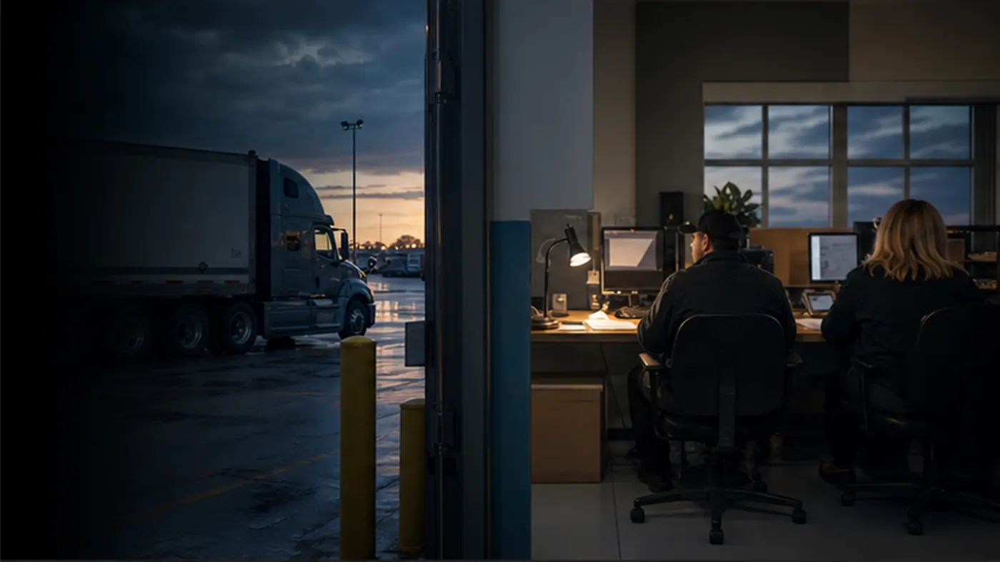

Import the TMS load
Load number, customer, carrier, driver, stops, documents, and status are brought into BOF as a partner import.

TMS-to-BOF simulation
Use synthetic load data and route diagrams to show how readiness review can complement a TMS without claiming production integration.
How the simulated workflow works
Load number, customer, carrier, driver, stops, documents, and status are brought into BOF as a partner import.
BOF checks driver compliance, carrier packet status, required documents, exceptions, and release blockers.
BOF produces a release decision, next action, responsible party, audit note, and simulated handoff message.
Clear division of responsibility
| TMS owns | BOF owns |
|---|---|
| Load creation, tenders, dispatch workflow, customer/carrier TMS records, load status, uploaded load documents, and accounting/TMS handoff. | Driver compliance rules, driver document vault, carrier packet review, load release decision, exception queue, settlement hold reasons, claims packet support, and audit trail. |
| What the TMS says is happening with the load. | Whether the load is ready, documented, compliant, and defensible before release. |
BOF driver database
TMS can identify the assigned driver on a load. BOF keeps the compliance record that tells the team whether that driver can support the release decision.
CDL, medical card, MVR, I-9/W-9, safety/training status, and document expiration dates remain BOF-owned.
Emergency contact, owner-operator packet, active safety holds, and dispatch-blocking reasons stay visible before release.
Bank and settlement setup stay attached so back-office follow-up does not disappear after dispatch.
BOF keeps the record of who reviewed the file, what blocked the decision, and what action comes next.
BOF-owned control layer
TMS remains the load workflow. BOF adds the back-office record that explains whether the load can move, who owns the blocker, and what evidence stays with the decision.
Unmatched drivers, expired credentials, missing pre-trip records, and carrier packet issues get a named owner and next action before release.
BOF keeps W-9/I-9, bank setup, owner-operator packet, and hold reasons visible without making TMS the compliance source of truth.
POD, lumper receipts, seal photos, delivery proof, and claim evidence can remain attached as post-trip readiness and exception records.
The final release, hold, or conditional-release decision carries reason, blocker, reviewer, timestamp, audit note, and simulated handoff payload.
Demo path
Step 1
Show the operating model with representative TMS-import loads and BOF readiness checks.
Step 2
Let a buyer inspect ready, hold, conditional release, and unmatched-driver scenarios without connecting to external systems.
Step 3
Display the decision, blocker, owner, next action, and audit note as a client-presentable handoff record.
Step 4
Carry the same partner-import story into the BOF product shell for clicks, alerts, records, documents, and release actions.
Partner workflow
See how TMS load activity becomes a BOF release decision with owner, blocker, next action, and simulated handoff.